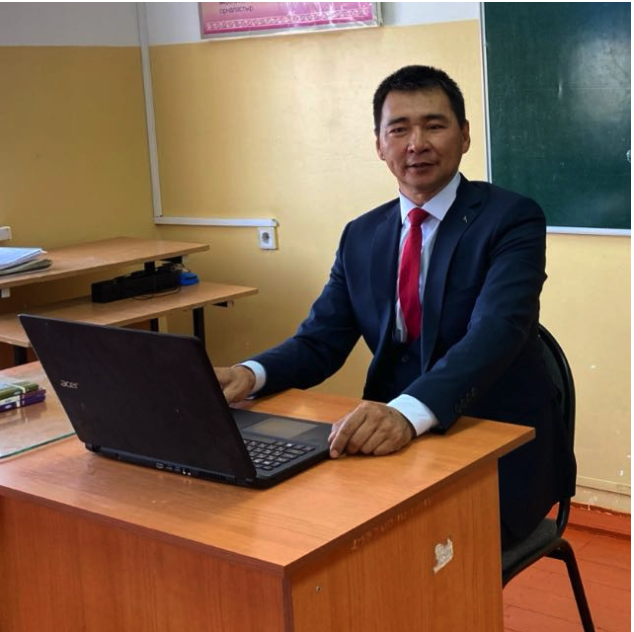

Ербол Жақсылықұлы
Көркем еңбек және информатика пәні мұғалімі
Жеке мәліметтер
Туған жылы: 14.08.1975
Аймақ: Оңтүстік Қазақстан облысы
Мамандығы: Көркем еңбек және информатика пәні мұғалімі
Жұмыс өтілі: 20+ жыл
Жетістіктері
Оқушылардың облыстық және республикалық ғылыми жобалар конкурстарындағы жүлделі орындары.
Информатика және технология пәндерінен әдістемелік нұсқаулықтар дайындау.
Мектептің IT-жобаларын дамытуға қосқан үлесі.
Оқушыларды техникалық шығармашылық жарыстарға дайындау.
Оқушылар жетістіктері
Облыстық деңгейдегі робототехника байқауында жүлделі орындар.
3D модельдеу бойынша халықаралық онлайн олимпиада финалистері.
"Ұлы өнертапқыштыққа алғашқы қадам" жарыстарында жүлделі орындар
Техникалық шығармашылық(Су, әуе, автокөлік, зымыран моделдьдері) Республикалық жарысының жүлдегері.
Шығармашылық тақырыбы:
Оқушыларды жаңа технологияларға бейімдеу және технокреативті идеяларды іске асыруға баулу.
Байланыс
Email:
er_75_75@mail.ru
TikTok:
ЕРЕКЕ🎓
Телефон:
+7 775 944 11 00